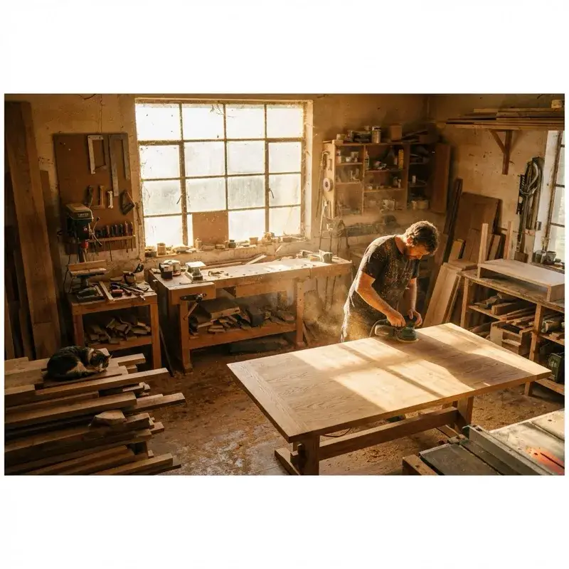
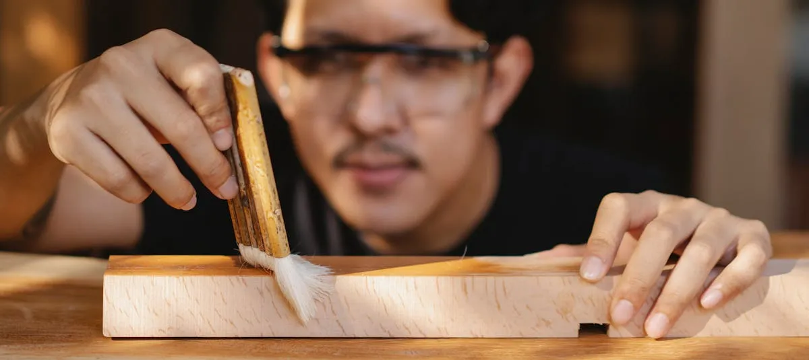
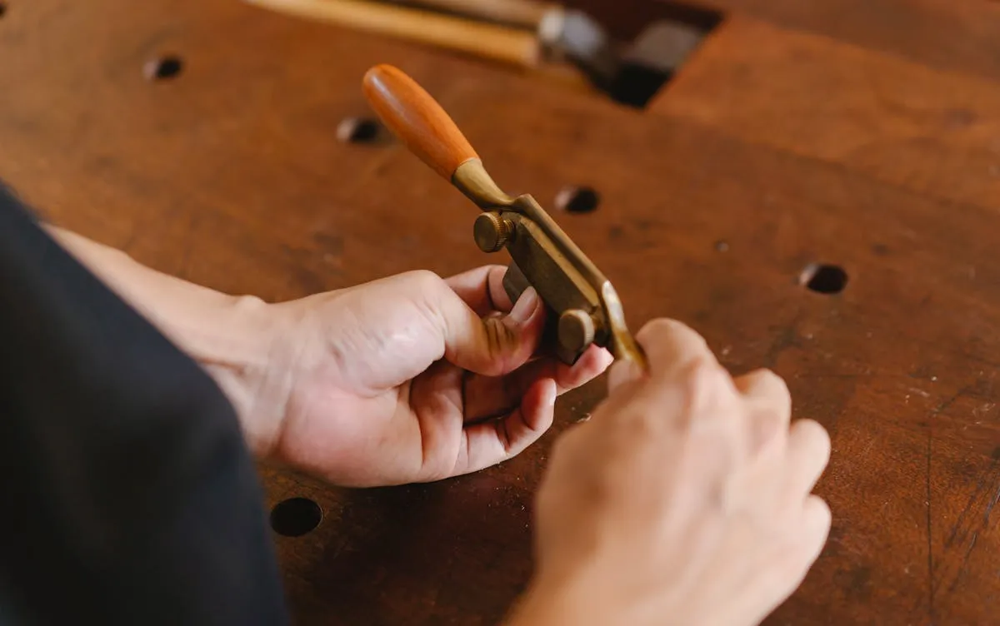
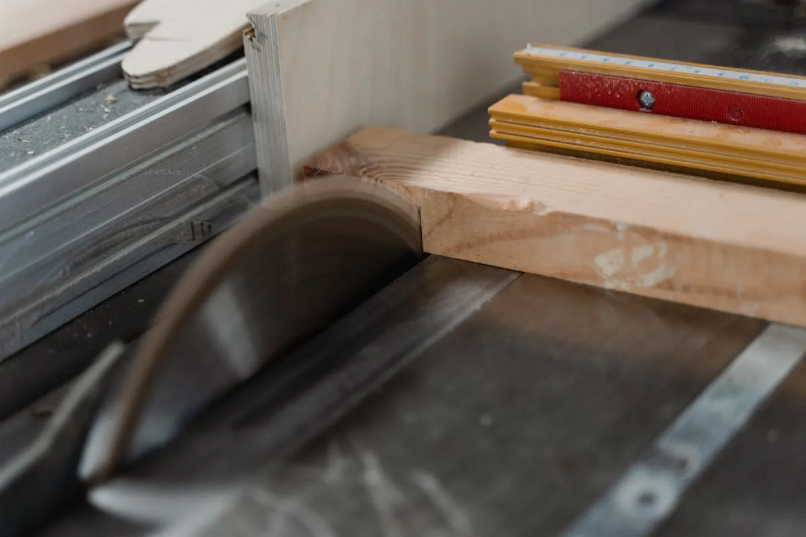
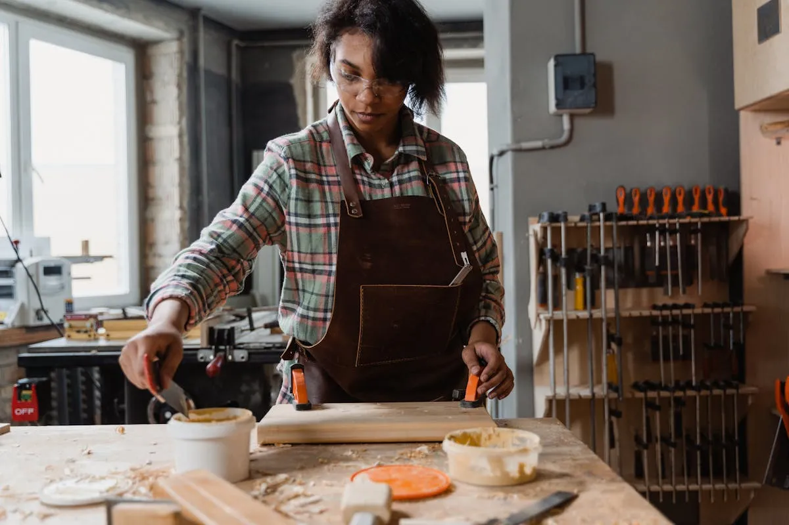

Why Choose Custom Furniture in Cedar Rapids?
In a world of fast furniture, investing in a commissioned piece offers unmatched quality, local provenance, and a design that perfectly fits your home.
Read Article →Insights on design, materials, and the craft of heirloom furniture.

In a world of fast furniture, investing in a commissioned piece offers unmatched quality, local provenance, and a design that perfectly fits your home.
Read Article →
How we integrate AI for precise specs and design variations while keeping traditional craftsmanship at the heart of our shop.
Read Article →
A study in texture and contrast: how we built this classic box-within-a-box project with hand-cut joinery.
Read Article →
Essential considerations for staining your wood projects, from wood species to environmental factors in Cedar Rapids.
Read Article →
Why traditional joinery like mortise and tenons makes our furniture an heirloom that lasts for generations.
Read Article →
Build a precision table saw jig for flawless box joints, plus micro-adjustment techniques for a piston-perfect fit every time.
Read Article →
Not all glues are created equal. Discover which adhesives we use for different species and joinery types.
Read Article →Let's discuss how we can bring your vision to life in our local shop.
Start a Conversation